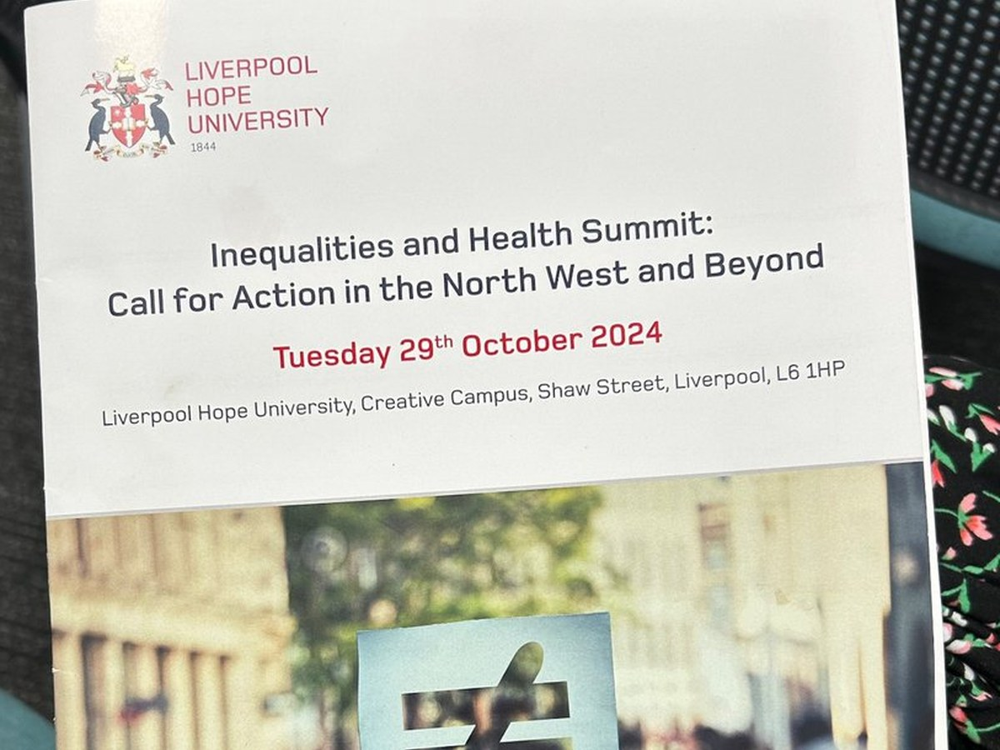

News · October 2024
‘Mutual empowerment’ to support action on health inequalities

Lucia D’Ambruoso presented the study at the Inequalities and Health Summit: Call for Action, held on the Creative Campus at Liverpool Hope University on Tuesday 29th October 2024.
The paper was titled ‘Mutual empowerment’ to support action on health inequalities: a pilot study using cooperative action learning to understand and address smoking in deprived communities. It was given in Session 2, Improving health through co-production and community action, chaired by Councillor Liz Parsons of Liverpool City Council, alongside contributions from Healthy Me Healthy Communities, the University of Central Lancashire and the Liverpool School of Tropical Medicine.
The action-focused summit set out to drive change in the North West region, bringing together academics, policy-makers, health professionals, third-sector organisations, communities, activists and citizens. Plenary speakers included Professor Richard Wilkinson, co-author of The Spirit Level; Professor Matthew Ashton, Director of Public Health for the Liverpool City Region; Katie Schmuecker of the Joseph Rowntree Foundation; and Debbie Abrahams MP.
This was the second time the study travelled to Liverpool Hope. The first was in June 2023, before the evidence had been analysed.
All news